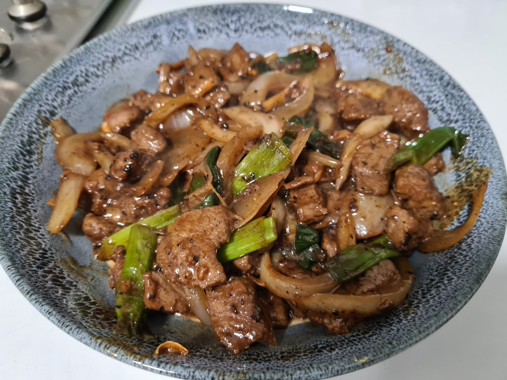

Chinese Stir Fry

Home
And thats how you make a simpe stiry fry meal.
Chinese stir fry, something I usually cook sometimes as a meal prep of the week.
Ingredients
- Beef steak cut - 500g
- 2 garlic glove
- Sesame oil - 1 tsp
- Cornflour - 2 tsp
- Soy Sauce - 2 tsp
- Spring Onion - a bunch
- ginger - 10g
- onion - 1
- Capsicum - 1
- Oyster Sauce - 1tsp
- Black pepper - 1tsp
- Chinese cooking rice wine - 4tsp
- chicken stock - 1 teaspoon
- Rice
Preparing the stiry fry
- Marinate the beef by by adding 2tsp of soy sauce, 1tsp sesame oil, 2tsp of cornflour.
- Bring out a chopping board and chop the spring onions(5-7cm pieces), onions, ginger (strip pieces) & capsium (2.5cm).
- Get a bowl and add 1tsp oyster sauce, 1tstp black pepper,4tsp chinese cooking wine & chicken stock.
Frying the stir fry
- Preheat the wok pan to a high heat.
- Add vegetable oil in the wok and stir it around
- Add the beef in first and stir it around til almost ready (around 1 minute) then take it out. You will use this again later.
- Add thegarlic & ginger first til you can smell the aroma, then add the rest of the vegetables (spring onions,onions & capsium).
- Then add in the sauce into it and stir the whole thing in
- And finally add the beef and stir the whole wok for another minute.
And thats how you make a simpe stiry fry meal.
Home